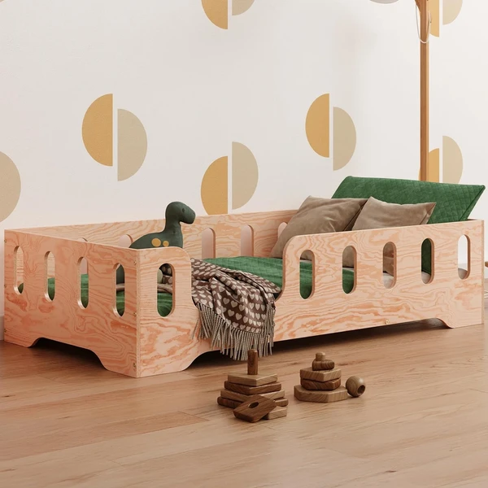
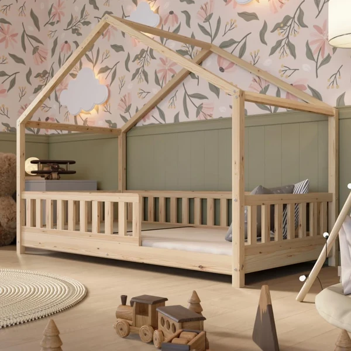
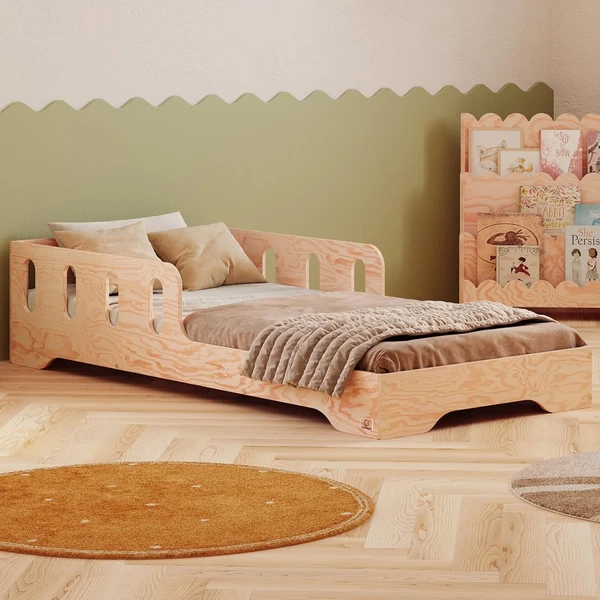
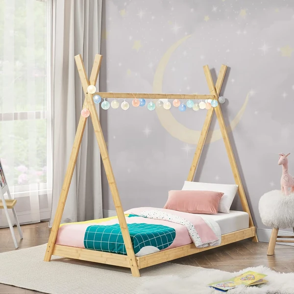
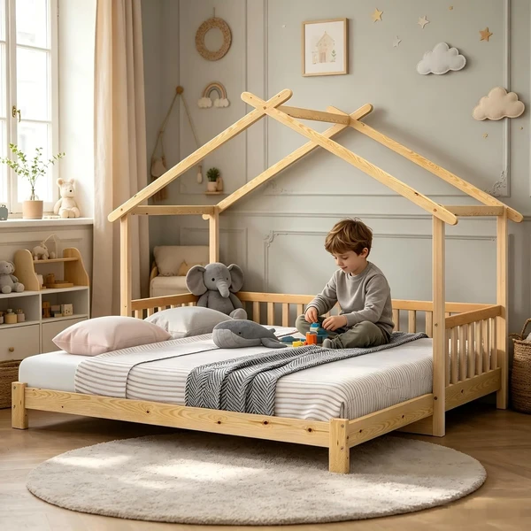
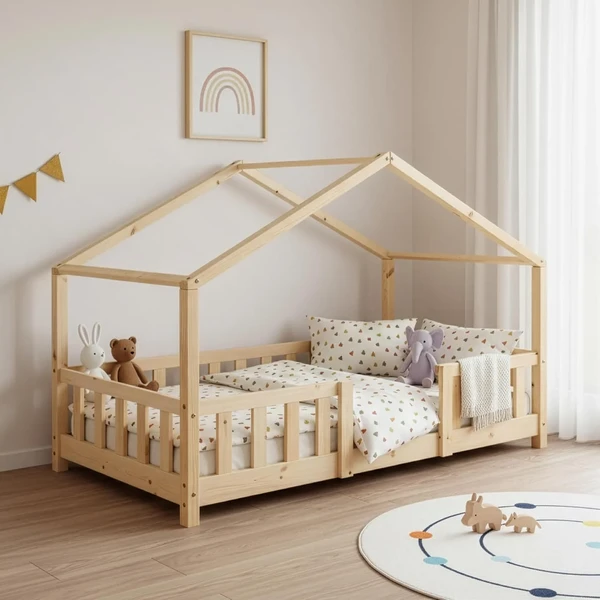

Cama Montessori smartwood 90x190
Cama Montessori de madera certificada FSC de 90x190 cm, con barandilla de protección y estructura baja a ras de suelo. Pensada para que el niño entre y salga por sí mismo con seguridad.
⭐ ¿Por qué nos gusta?
- ✔ Madera certificada FSC de 15 mm de grosor.
- ✔ Barandilla de protección incluida.
- ✔ Montaje sencillo con instrucciones claras.
💬 Lo que más destacan las familias
Las familias destacan la solidez de la madera y que el montaje resulta más sencillo de lo esperado.
Ver en Amazon

Cama casita Crazy Pine 160x80
Cama Montessori con forma de casita de 160x80 cm, fabricada en madera de pino con certificación PEFC. Incluye somier de listones y patas ajustables en altura para adaptarse al crecimiento del niño.
⭐ ¿Por qué nos gusta?
- ✔ Patas ajustables en dos alturas distintas.
- ✔ Somier de listones de madera incluido.
- ✔ Diseño escandinavo tipo casita.
💬 Lo que más destacan las familias
Se valora poder ajustar la altura de la cama y que venga con el somier incluido, sin tener que comprarlo aparte.
Ver en Amazon

Cama Montessori smartwood con somier
Cama Montessori de madera de pino con certificación FSC, de 90x190 cm, con bordes redondeados y una barrera de protección a mitad de la cama. Incluye somier de lamas flexibles.
⭐ ¿Por qué nos gusta?
- ✔ Bordes redondeados para mayor seguridad.
- ✔ Somier de lamas flexibles incluido.
- ✔ Barrera de protección a mitad de la cama.
💬 Lo que más destacan las familias
Las familias destacan el acabado en madera natural y que resulte igual de resistente que una cama convencional.
Ver en Amazon

Cama tipi en.casa de bambú
Cama infantil con estructura tipi de bambú natural, de 90x200 cm y somier incluido. Un diseño llamativo que convierte la hora de dormir en un rincón propio dentro de la habitación.
⭐ ¿Por qué nos gusta?
- ✔ Estructura tipi, un diseño diferente y llamativo.
- ✔ Fabricada en bambú natural.
- ✔ Somier incluido en el mismo pack.
💬 Lo que más destacan las familias
Se valora especialmente el diseño tipi, que además de cama funciona como un pequeño rincón decorativo en la habitación.
Ver en Amazon

Cama casita Lexiou con cajón
Cama Montessori en forma de casita con un cajón deslizante en la parte inferior para guardar juguetes o ropa de cama. Estructura de madera de pino maciza con barandillas de seguridad en los cuatro lados.
⭐ ¿Por qué nos gusta?
- ✔ Cajón deslizante para guardar cosas debajo.
- ✔ Barandillas de seguridad en los cuatro lados.
- ✔ Combinación de colores blanco y madera natural.
💬 Lo que más destacan las familias
Se valora tener espacio de almacenaje bajo la cama, algo que no todas las camas casita ofrecen.
Ver en Amazon

Cama casita Treviolo 70x140
Cama infantil con forma de casita de 70x140 cm, fabricada en madera de pino, con una rejilla de seguridad que actúa como barrera protectora. Un tamaño más compacto, pensado para habitaciones pequeñas.
⭐ ¿Por qué nos gusta?
- ✔ Tamaño compacto, ideal para espacios reducidos.
- ✔ Rejilla de seguridad como barrera protectora.
- ✔ Madera de pino resistente y duradera.
💬 Lo que más destacan las familias
Es una de las camas casita más comentadas, tanto por el tamaño compacto como por la relación calidad-precio.
Ver en Amazon